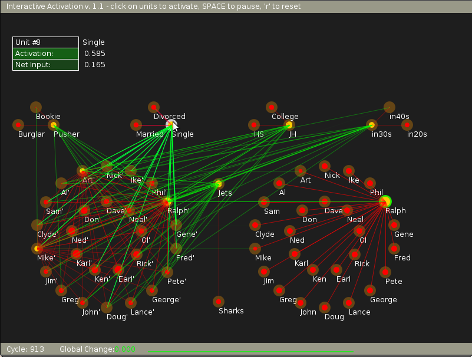

Computer Science & Engineering →Artificial Neural Networks Virtual Lab →List Of Experiments
Parallel and distributed processing - I: Interactive activation and competition models
Illustration of Interactive Activation and Competition Model
There are a total of 68 units in this model. Each unit computes a weighted sum of the input values to the unit, fed from other units as well as external inputs, if any. The weighted sum or the activation value is passed through a non-linear output function, which gives as output, the activation value itself, if the sum lies between some prespecified minimum and maximum values. Otherwise, the function gives either the minimum value at lower limit or the maximum value at the upper limit. The state of the model is described as output of all the 68 units at any given instance of time. Starting from any state, the next state can be computed by selecting a unit at random and computing the weighted sum of its inputs first, and then the output of the function.
Due to change in the value of the output of this unit, the model goes to a different state. Then another unit is selected at random and the new state for that unit is determined. All the units are updated by selecting all the units in a random sequence, to compute one cycle of activation dynamics. After several cycles, the model is guaranteed to reach equillibrium state, when there will not be any further change in the state of the model.
For each set of external inputs, the model reaches a stable state eventually. From the stable state the stored data can be read out. For example, if we want the data about 'Ralph', the output (state) of the 'Ralph' unit in the 'Name' pool is set to maximum. Starting with some initial values of state on other units, the network states are computed for several cycles, until an equilibrium state is reached. At equilibrium, there will be one unit in each pool having large positive value. Those units correspond to the data that belongs to 'Ralph'.
In the experiment here, in the initial state we can see, as illustrated by the following figure, how 'Ralph' unit is connected in an inhibitory sense (illustrated by red connections) with the rest of the members of the 'Name' pool. Also it is connected by an excitatory connection to the unit 'Ralph' in the 'instance' pool (illustrated by a green connection).
 |
Now, when an external input is applied by changing the state of the 'Ralph' unit (as by clicking the mouse over 'Ralph' node in the 'Name' pool) we see that all the nodes settle down to a stable state after sometime.
 |
Finally when we try to read out the data related to 'Ralph' unit from the model, we just need to visit every pool and find out which node has the highest positive value. That data belongs to 'Ralph' unit.
|  |
For this experiment, we can provide external bias and hence activation to units of all the pools except the instance pool. The instance pool, which is also known as the hidden pool is not accessible to the end user. Yet we can see the connections within and outside this pool by moving mouse pointer to respective units.